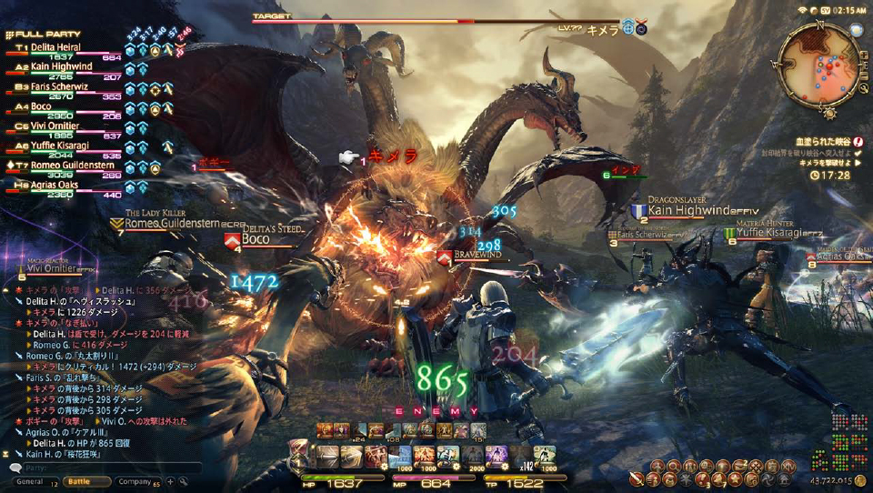
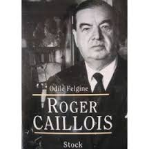
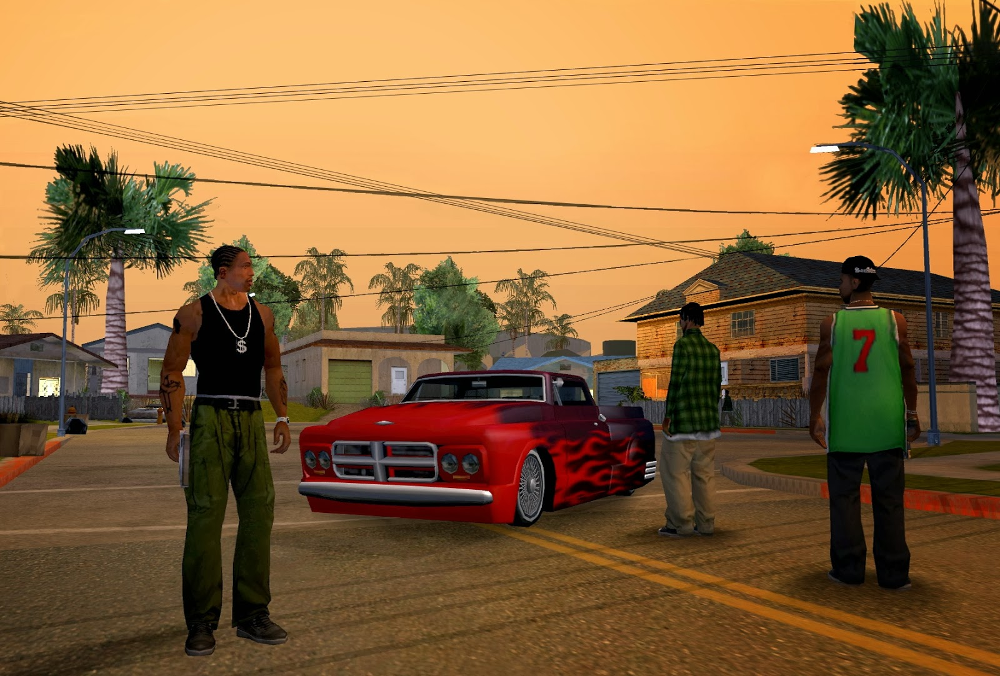
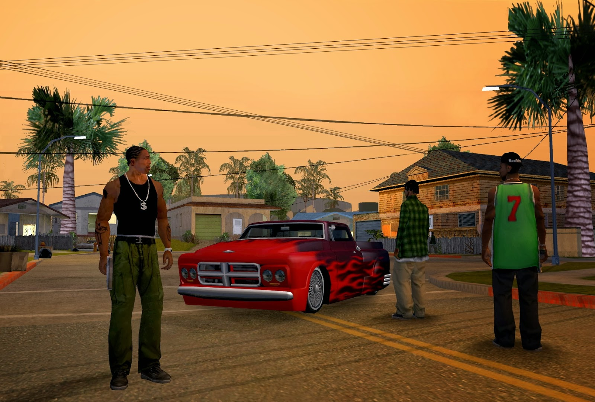
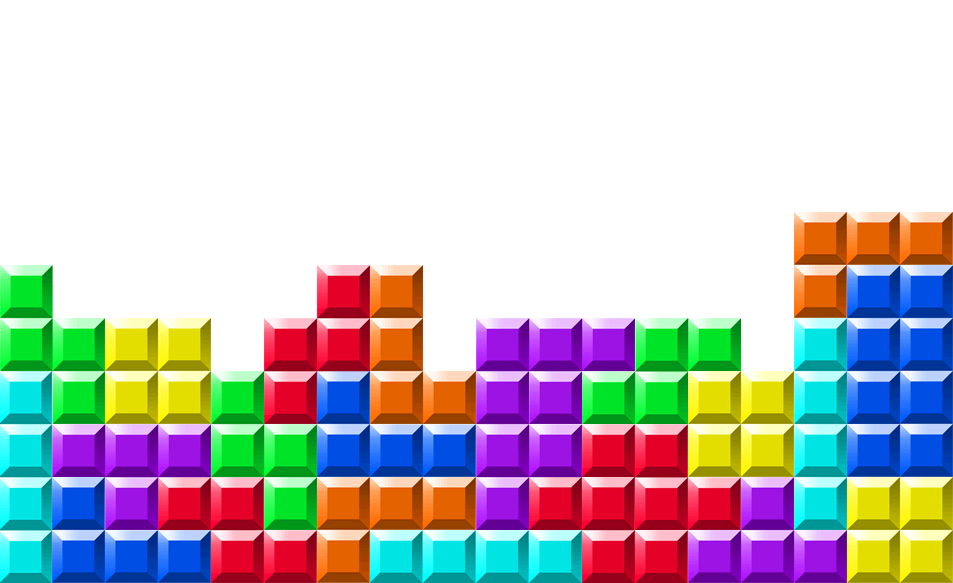
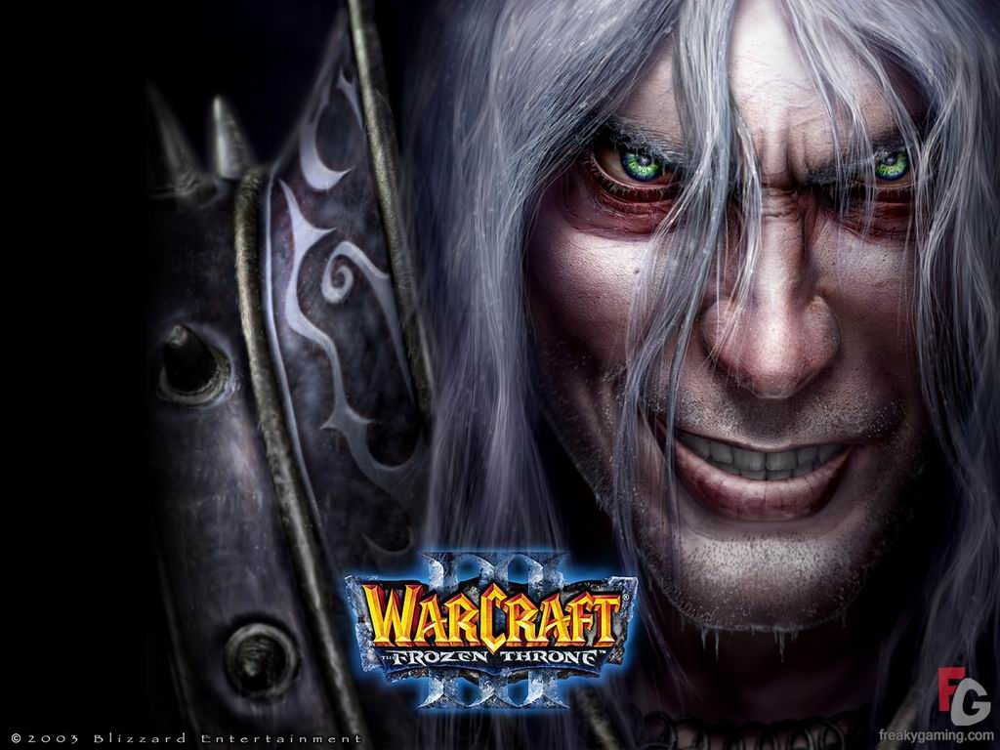
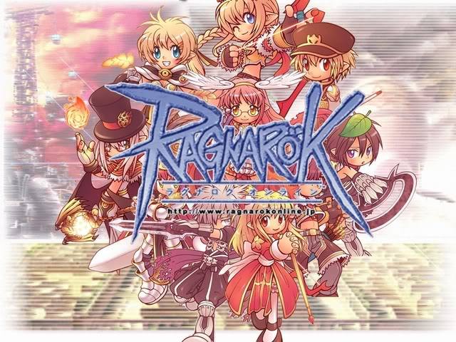
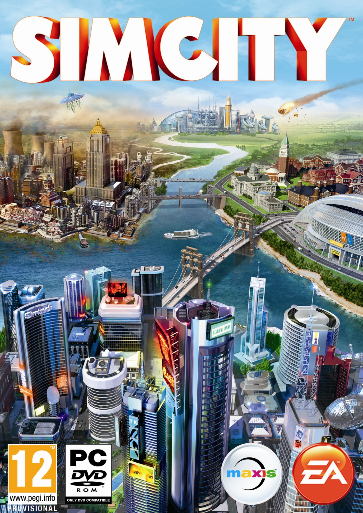

GAMES
Definisi Game
Menurut Kamus & Para Ahli
- 
Apa itu Game???
Game diartikan sebagai permainan yang merujuk pada pengertian kelincahan intelektual & sebagai arena keputusan dan aksi pemainnya.
Game adalah sesuatu yang memiliki akhir dan cara mencapainya artinya ada tujuan, hasil dan serangkaian peraturan untuk mencapai keduanya.
Game adalah aktivitas yang mencakup karakteristik berikut : fun (bebas bermain adalah pilihan bukan kewajiban), separate (terpisah), uncertain, non-productive, governed by rules (ada aturan), dan fictitious (pura-pura).
Sejarah Perkembangan Game
Generasi-Generasi Game
Generasi Pertama(1972)
Generasi pertama konsol permainan video berlangsung dari tahun 1972, dengan rilis dari Magnavox Odyssey, hingga 1977, ketika pong-style produsen konsol meninggalkan pasar secara massal karena pengenalan dan keberhasilan mikroprosesor berbasis konsol.
Tahun 1975
Magnavox menyerah dan menghentikan produksi Odyssey. Sebagai gantinya, mereka mengikuti jejak Atari, memproduksi mesin ding dong bernama Odyssey 100, yang khusus menyajikan game Pong.
Generasi Kedua(1976)
Fairchild mencoba menghidupkan kembali dunia video game dengan menciptakan VES (Video Entertainment System). VES adalah mesin pertama yang disebut ”konsol”.
Konsol ini menggunakan kaset magnetik yang disebut cartridge. Nah, konsep ini kemudian diikuti oleh beberapa produsen lain, termasuk Atari, Magnavox, dan RCA, ketiga perusahaan tersebut juga merilis konsol serupa. Fairchild VES, pertama di dunia yang menggunakan media cartridge.
Tahun 1977
Dunia konsol menjadi tidak populer, game-game yang ada tidak berhasil menarik minat. Fairchild dan RCA mengalami kebangkrutan. Praktis, hanya ada Atari dan Magnavox yang masih bertahan di dunia video game.
Tahun 1978
Magnavox meluncurkan Odyssey 2, seperti halnya Odyssey pertama, konsol ini pun gagal menjadi hit. Tak lama berselang, Atari meluncurkan konsol legendaris, Atari 2600, yang terkenal dengan game Space Invaders-nya
Tahun 1980
Berbagai produsen konsol muncul, dan mereka mengambil Atari 2600 sebagai konsep dasar, perkembangan dunia game pun semakin pesat.
Tahun 1983
Dunia video game kembali ambruk. Game-game yang kurang kreatif membuat konsol kembali mendapat sambutan dingin, apalagi, PC saat itu menjadi semakin canggih. Orang lebih memilih membeli PC ketimbang konsol video game, selain untuk bermain, PC juga produktif untuk bekerja.
Game-game komputer (PC Game) semakin berkembang pesat, hingga saat ini. Pelopor PC ber-game saat itu adalah Commodore 64, konsol sekaligus personal computer yang menyediakan tampilan grafis 16-warna dan memiliki kapasitas memori jauh lebih baik dari konsol videogame model apa pun.

Generasi Ketiga(1983)
Perusahaan bernama Famicom (Jepang) menciptakan gebrakan baru, sebuah konsol bernama Famicom/Nintendo Entertainment System (NES) dirilis di akhir 1983. Konsol ini menampilkan gambar dan animasi resolusi tinggi untuk pertama kalinya setelah mendapat sambutan hangat di Jepang.
Famicom memperluas pemasarannya ke Amerika, yang dikenal dengan NES (Nintendo Entertainment System). Nintendo memiliki chip pengaman pada cartridge game mereka, dengan demikian seluruh game yang akan dirilis haruslah seijin developer Nintendo. Dan akhirnya, muncul sebuah game legendaris, Super Mario Brothers, yang dibintangi karakter fenomenal yang tetap eksis hingga kini, Mario. Famicom dari Nintendo, berhasil merajai pasar videogame di era generasi ketiga.

Generasi Keempat(1988)
NES mendapat sambutan hangat di seluruh dunia, dan sebuah perusahaan bernama Sega mencoba menyaingi Nintendo. Sega merilis konsol next-generation mereka, Sega Mega Drive (yang juga dikenal dengan Sega Genesis). Konsol ini menyajikan gambar yang lebih tajam dan animasi yang lebih halus dibanding NES. Konsol ini cukup berhasil memberi tekanan, tetapi NES tetap bertahan dengan angka penjualan tinggi.
Tahun 1990
Nintendo kembali menggebrak dengan konsol next-gen mereka, SNES (Super Nintendo Entertainment System). Selama 4 tahun, Nintendo dan Sega menjadi bebuyutan, meskipun ada beberapa produsen seperti SNK dengan NeoGeo-nya, NEC dengan TurboGrafx-16 dan Phillips CD-i, tapi kedua konsol mereka begitu handal dan populer. Rivalitas yang legendaris, Super NES dan Mario Brothers sebagai ikonnya melawan SEGA Mega Drive dan Sonic the Hedgehog sebagai ikonnya.
Generasi Kelima(1990-1994)
Sega dan Nintendo tetap bersaing. Berbagai game fenomenal dirilis. SNES menyertakan chip Super FX pada cartridge mereka, dan Sega menggunakan Sega Virtua Processor, keduanya bertujuan untuk meningkatkan kualitas grafis dari game. Alhasil, SNES dan Sega saling beradu dengan game-game keren seperti Donky Kong Country (SNES) dan Vectorman (Sega).
Tahun 1993
Sebuah perusahaan ternama, Panasonic, merilis konsolnya yang bernama Panasonic 3DO. Ini adalah konsol pertama yang menggunakan CD sebagai pengganti cartridge. Harganya yang sangat mahal membuat konsol ini tidak populer, 3DO tidak bertahan lama dan harus segera menghentikan produksinya, Panasonic 3DO merupakan konsol game pertama yang menggunakan media CD.
Tahun 1994
Atari kembali meluncurkan konsol baru untuk menandingi Nintendo dan Sega. Atari Jaguar jelas jauh lebih canggih ketimbang NES maupun Mega Drive, tetapi penggunaannya yang sulit menjadi batu sandungan, belum lagi, pada tahun yang sama, Sony merilis konsol super legendaris, PlayStation. Atari bangkrut dan akhirnya melakukan merger. Konsol basis CD yang pertama kali menuai sukses adalah Sony PlayStation. Konsol Jepang ini segera mendapat sambutan hangat, dan hingga saat ini, PlayStation sudah terjual ratusan juta unit. PlayStation yang juga disebut PS-One merupakan konsol terlaris sepanjang masa. Sega dan Nintendo tampaknya menyadari ketertinggalan mereka dari Sony. Sega kemudian merilis Sega Saturn, dan Nintendo mengeluarkan Nintendo 64.
Generasi Keenam (1998)
Setelah jatuhnya Nintendo dan Sega, kini dunia konsol jadi milik Sony. PlayStation menjadi raja dan bisa dibilang tidak memiliki pesaing. Sega mencoba meluncurkan Sega Dreamcast untuk mematahkan dominasi Sony, tetapi kembali gagal, akhirnya pada tahun itu juga, Sega mengundurkan diri dari dunia produsen konsol.
Tahun 2000
Sony semakin ’merajalela’ ketika mereka berhasil merilis konsol barunya, PlayStation 2, yang sudah berbasis DVD. Nintendo mencoba bertahan di dunia konsol dengan merilis GameCube. Konsol ini tidak menggunakan DVD 12 cm biasa, melainkan DVD yang berukuran lebih kecil, yaitu 8 cm. Ukuran keping medianya yang lagi-lagi nyeleneh membuat GameCube kurang populer. Satu-satunya pesaing serius PlayStation 2 adalah Xbox.
Sebuah konsol keluaran Microsoft ini menggebrak dengan tampilan visual yang sangat tajam dan berkualitas yang kala itu lebih menarik dibanding dengan PlayStation 2. Sayangnya game-game Xbox ternyata tidak sepopuler PlayStation 2. Satu game Xbox yang menjadi hit dan cukup fenomenal yaitu Halo. Karena game ini udah memanfaatkan fasilitas ‘unggul’ dari Microsoft, yaitu Xbox Live.
 

Jenis - jenis games
- Adventure
- Platform
- RPG (Role-Playing Games)
- Puzzle
- MMORPG
- Simulasi
- Web Based Games
- Terkadang dalam satu game bisa terdapat lebih dari 1 genre/Tipe.
Adventure
- Melibatkan eksplorasi atau interaksi di lingkungan sekitar.
- Cerita serta penyelesaian puzzle juga disorot pada jenis game ini.
- Biasanya interaksi menggunakan pointer dan klik.
- Pertarungan pada peran ini cukup kecil.
- Contoh : Indiana Jones, Monkey Island dsb.
-


Platform
- Mulai pada tahun 1981 dengan munculnya game "Donkey Monkey" dan "Space Panic".
- Diidentifikasi dengan lingkungan yang bisa dinavigasi.
- Membutuhkan waktu dan lompatan untuk mencapai suatu destinasi.
- Contohnya Sonic The Hedgehog.
-

RPG
- Kekuatan atau kemampuan
- Direpresentasikan dalam statistik.
- Karakter menjelajahi dan menyelesaikan quest.
- Experience/Statistik bertambah.
- Contoh: Dark soul dan The Witcher.


Puzzle
- Sangat singkat
- Addictive
- Selesaikan puzzle.
- Contoh: tetris, puzzle bobble.
- 

MMORPG
- Massive Multiplayer Online Role Playing Game
- Game role playing multiplayer
- Online
- Contoh : Ragnarok, Warcraft.
-  
Simulasi
- Ciptakan suasana mirip dengan asli.
- Contoh : SimCity, The sims.
- 

Web Based Games
- Dimainkan via Website
- dibangun dengan Flash atau Shockwave.
- Contoh: Rival Saga,Pet Forest